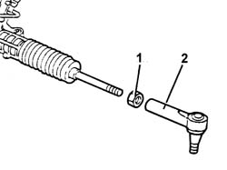

4110B14 Steering RODS - R.R. with steering box removed
- Path
- Procedures > 41 STEERING > 4110 steering control and linkage > 4110B STEERING CONTROL LINKAGE > 4110B14 Steering RODS - R.R. with steering box removed
- Kind
- repair procedure (removal / refitting; the operation number is the code)
- Applies to
- all engines; all production periods
- Interactive page
- https://sloeber94.github.io/elrnDB-lThss/en/#/78748
Applies to: all engines; all production periods
 Removing
Removing
 Refitting
Refitting- Measure the length of the steering rods to be used in the refitting.
1. Loosen the nuts fastening the steering rods.
2. Undo the rods from the steering box and remove them.

Applies to: all engines; all production periods
Refitting
Removing- Tighten the steering rods on the steering box.
- Check that the length of the adjustable steering rods is the same as measured during the removal.
- Tighten the adjustable rod nuts to torque.
 | Value - daNm | Fastening | Component | Ø |
|---|---|---|---|---|
. | 5 | Locknut | ADJUSTABLE LINK BALL JOINTS | M14x.5 |